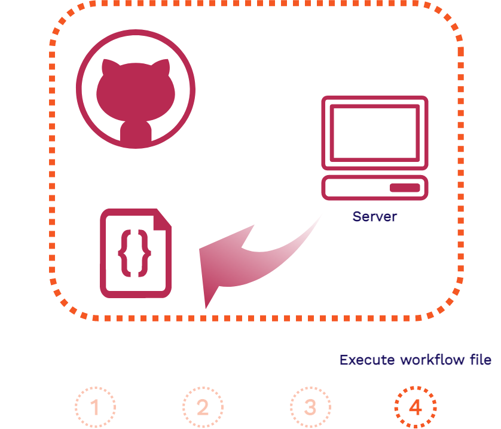

Case Study
1. What is Stagehand?
Stagehand is a drop-in solution that provides review apps for modern frontend applications. We are a framework that automatically manages review apps for your application’s GitHub repository on your own cloud infrastructure. We use AWS, GitHub Actions, and some Stagehand client-side code to set-up, deploy, manage, and teardown review apps for your frontend application.
All you have to do is install the Stagehand CLI via our NPM package and run our init command from your local repo. We will handle the rest. Then you will have review apps automatically deployed for you to view and share whenever you open a pull request on your GitHub repository.
In this case study, we describe what review apps are as well as their value for modern frontend applications. We then look over existing solutions for review apps and where Stagehand fits into the mix. Then we will look at how we built Stagehand as well as challenges we faced along the way. Finally, we will go over some future work we would like to develop.
2. What are review apps?
Stagehand automates the deployment and management of review apps for modern frontend applications. To understand why we built Stagehand, we need to understand what review apps are. In this section we will dive into review apps and the value they bring to frontend developers as well as what we mean when we say that Stagehand is for “modern frontend applications”.
2.1. Staging Environments
To see where review apps fit into the overall continuous development of a production application, let’s consider the various environments involved in that application.

Whenever code changes in a production application, such as with adding a new feature, it starts in a development environment. This environment involves a developer coding up the new feature and testing it on their local machine.
Once the new feature code is finished and tested locally, it typically moves on to a dedicated testing environment. This environment is optimized for whatever aspects of the application are being tested (specific units, end-to-end functionality, etc.).
Prior to deploying live, the new feature code is moved to a staging environment. This environment is supposed to match the production environment as closely as possibly for any final checks. Finally, the new code moves to the production environment to go live.
Review apps generally fall under the same category as staging environments, though their usefulness may expand beyond that. So it will be useful to look at staging environments in more detail.
What are staging environments? Here is a good definition:
“A staging environment (sometimes called a pre-production environment) is the environment where your code is ‘staged’ prior to being run in front of users so you can ensure it works as designed.” [12]
A staging environment can be used for quality assurance teams, automated end-to-end testing, and for product managers and/or other stakeholders to be able to validate that new features and functionality work as intended.
Consider this scenario where you are a developer of a frontend application:

The product manager wants a responsive navigation bar added to the application and you are assigned this task. After coding up and testing your new navigation bar feature, you deploy your changes to a staging environment.
In this staging environment, the product manager and other stakeholders can view your changes in a production-like environment. They can play around with the new functionality, making sure it is what they want and that everything works properly. Then, once your new feature is approved, it can be moved into production to be released.
But what if you are part of a development team that is assigned a wide variety of features. Now you, Alice, and Bob are all working on different parts of the frontend application at the same time. You are working on the navigation bar feature, Alice is working on the footer, and Bob is working on the page content:
All of these features will have to be deployed to a shared staging environment. There the new features can each be verified by the product manager and other stakeholders before being approved to go into production.
But because this environment is shared, maybe you and Alice have to wait until Bob is done using it before you can deploy and share your new features. Furthermore, you or Alice may have to clean up the staging environment if Bob made changes to it. And if your code now conflicts with Bob’s, you may have to resolve these conflicts.
This type of bottleneck in the development cycle is one of many scenarios where having review apps can be incredibly helpful.
2.2. What Are Review Apps?
Review apps are ephemeral, fully-functional versions of a production application that can be easily deployed and shared with others. Let’s take this definition apart a piece at a time:
- Ephemeral - Review apps are temporary environments that can be built and torn down at any time without affecting the production application.
- Fully-Functional - Review apps have end-to-end production-like functionality. They are temporary versions of the main application.
- Easily-Deployed - Review apps can be instantly built and deployed whenever there is a change in an application’s code, like when a new feature is added.
- Self-Contained - Review apps exist in isolation from the main production application. This allows developers to try out new features and functionality in a deployed production-like environment without touching the production code.
Consider the value of review apps for the development team scenario from above:

Your team has introduced a review app solution like Stagehand to the mix. With review apps, each developer on your team now has their own isolated environment where you can easily deploy and share your new features. You and your team no longer have to fight over a shared staging environment just to be able to quickly deploy and share your new features with others.
Each review app can be accessed via a unique shareable URL. You can share this with your product manager and even non-technical stakeholders, getting more feedback more quickly while you are developing your new feature.
Review apps also enable greater collaboration within your development team itself. As you, Alice, and Bob are coding up your new features, you can quickly deploy them with review apps and share them with each other. So you do not have to pull down each other’s code and get it running locally to collaborate.
Review apps make checking out your work in a production-like environment as you are developing as simple as possible. But what do they look like in action from a developer’s point of view?
Here on the GitHub repository for your team’s application, you have opened a pull request for your new navigation bar feature. The product manager will have to see the change and give approval before your code can move on to production.

As soon as the pull request is opened, a review app is automatically built and deployed for you. A unique URL for this particular review app is automatically posted as well. You share this review app with your product manager. She wants you to move the navigation bar icon to the other side of the page.

After making the change and making a new commit to the open pull request, a whole new review app is built and deployed. This new review app exists at the same time as the previous review app. You can even open each one via their URLs simultaneously and compare them side-by-side.
You share the link for the new review app with your product manager. She is now satisfied with the changes. You are clear to promote your new navigation bar feature to production. When this pull request is closed, all review apps associated with it will be automatically disposed of which will free up any unnecessary cloud resources.
2.3. Frontend Review Apps
Now that we understand what review apps are and their value, we will take a look at what we mean that Stagehand is for “modern frontend applications”. First we will look at why frontend applications are a great use case for review apps and then we will look at what a modern frontend application actually is.
2.3.1. Why Frontend Review Apps?
Review apps are an incredibly helpful tool for developers of all types of applications. But their benefits are particularly helpful for developers of frontend applications. Why is this?
First, because frontend applications deal heavily with the end user experience, more visual testing and verification in a deployed environment is needed. You want to be able to mimic the eventual user experience as much as possible during development.
Second, frontend applications are more lightweight. Therefore, they do not need to spin up as much infrastructure nor allocate as many resources as a full stack application. Also, because frontend applications are decoupled from data level concerns, they better mimic the final production environment as a full stack application.
Finally, because the functionality of frontend applications are more user or consumer facing, there may need to be more sharing of new features and functionality with non-technical stakeholders. You need a way to easily deploy and share your latest changes with them during development. Introducing review apps to your frontend development team fits all of these needs.
2.3.2. Frontend Applicaton Architecture
Stagehand provides review apps for frontend applications. What is a frontend application? It will be helpful to first look at the architecture of a full stack application for contrast. Here is how a typical 3-tier web application architecture works:


First, a request comes in from a client for our application and is handled by our web server. Then the application server will handle the business logic for the application, including fetching data from the database and generating the assets for the response. Finally, the response is sent back to the client in the form of HTML, CSS, and JavaScript.
The key takeaway from this full stack architecture is that the assets are generated at request time. So it is only when the client requests our application that the assets are actually built. This is in contrast to what happens in a frontend application.
In a frontend application architecture, such as a site built with a static site generator, things happen in the opposite direction:


First, when a change is made to the code or content of our application, that is when the assets are built. Then those pre-built assets are typically pushed to a content delivery network (CDN) for hosting. When a client makes a request for our application, these latest pre-built assets can be instantly served from an edge location on the CDN.
Stagehand supports frontend applications like this that can be pre-built and instantly served from a CDN. We also support a more modern dynamic type of frontend application:


In a more modern dynamic frontend application, the app is served in a similar way to the previous frontend architecture above. First, the assets are pre-built and pushed to a CDN whenever the code for the app changes. And when requests come in from a client, those latest pre-built assets are instantly served from the CDN.
However with modern dynamic frontend applications, more complex client-side JavaScript is sent back to the client in the response. Then data can be fetched by that client-side code from external APIs. This gives these applications more dynamic functionality, similar to a full stack application.
This type of modern dynamic application includes Single Page Applications built with something like React, as well as JAMstack applications built with a frontend framework like Gatsby. Because these applications can be served as pre-built assets from a CDN, Stagehand also supports automated review apps for them.
3. Existing Solutions
Before we look at Stagehand, we will look at various existing solutions that can empower developers with review apps. There are generally two categories of existing solutions: feature solutions and service solutions.
3.1. Feature vs. Service Solutions
Feature solutions (Reviews As A Feature) offer review app functionality as part of a larger hosting service. In order to take advantage of their review apps feature, you typically must host your entire application on their hosting service. Examples include Netlify with their “Deploy Previews” feature, Vercel with their “Preview Deployments” feature, and Heroku with their “Review Apps” feature.
Service solutions (Reviews As A Service) exist specifically for providing review apps for developers. They provide developers review app functionality without having to host their entire application on their platform. There are a wide range of examples here as well, including FeaturePeek, Release, and Tugboat.
Let’s compare the tradeoffs with these two types of review app solutions:

Neither of these types of solutions are truly open source. They do not give you control over the infrastructure or code used to manage your review apps. However, they are both very convenient solutions as they automate the deployment and management of review apps for you.
Service solutions are more flexible as they specialize in review apps and do not tie developers to a larger service. But both solutions host your review apps for you and are feature-rich right out of the box.
But what if you are a developer who wants to be able to self-host your review apps on your own infrastructure? And what if you also want the extensibility and control of an open source solution. One option is to do it yourself as we will cover next.
3.2. DIY
To manually develop a solution for deploying and managing your own review apps, you will have to provision and configure a rather large number of resources:

First, you will need a cloud storage solution to store all of the build assets for each of your review apps. Then you will need to provision and configure a CDN (content delivery network) for secure and fast hosting. For any processing needs such as routing, you may have to write and deploy a number of serverless functions.
The most extensive resource that you will have to provision and configure is a build server. You will have to set it up to automate the building, deploying, and tearing down of your review apps. And you will have to figure out a way to integrate it with wherever your repository is located, such as on GitHub. Finally, you will need some services to secure your review apps according to your needs.
Let’s compare the DIY approach with the previous types of review app solutions we explored:

The DIY approach gives of all of the benefits of open source as we now own the infrastructure and code. But provisioning and configuring so many resources to get review apps up and running is far from convenient. The DIY approach is flexible as we are not tied to a larger hosting service. And we can now self-host our review apps on our own infrastructure. However, we will have to develop any features we need beyond basic functionality ourselves.
What if there was a non-hosted, open-source framework that does not require all of the work of the DIY approach? This is where Stagehand fits in and why we built it.
Stagehand gives you the same tradeoffs as the DIY approach, but we automate the whole process for you. Stagehand is fully open source, giving you control of the infrastructure and code. And we automate the provisioning and configuration of all of that infrastructure for you.
We are a drop-in solution that does not tie you into a larger service just to take advantage of review apps. We allow you to self-host your review apps on your own infrastructure. Like the DIY approach, we are not feature-rich out of the box outside of basic review app functionality.
Next we will dive into how Stagehand works as well as how we designed and built it.
4. Stagehand
4.1) AWS

T
...sends back a response with a new webpage with the client’s new post. This is as expected, but what happens when a second client makes a post?
H
4.2) Github Actions



H
4.3) Client Side Code
H
4.4) CLI
H
5) Challenges
I
5.1) Relative Paths
Broadly[16],
5.2) Github Action Optimizations
Broadly[17],
L
6) Future Work
W
Quote. [26]

ulimits were increased to the following:
"ulimits": [
{
"name": "nofile",
"softLimit": 50000,
"hardLimit": 65536
}
]
Once this was updated, the test ran without any errors.
7) References
- https://pragprog.com/titles/sbsockets/real-time-phoenix/
- MDN on SSE. The limit per browser is set to 6 open connections. This is not an issue when using SSE with HTTP/2, since HTTP/2 allows multiplexing, see https://www.infoq.com/articles/websocket-and-http2-coexist/